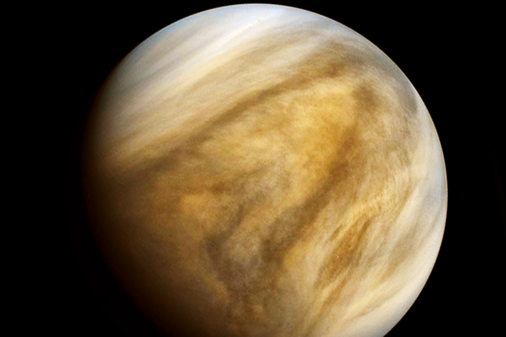

Here, you all will get the more articles
On 14 September, scientists revealed that they had found phosphine in Venus’s atmosphere, about 55 kilometres above the surface1, using the Atacama Large Millimeter/submillimeter Array in Chile and the James Clerk Maxwell Telescope in Hawaii. The radio data showed that light was being absorbed at millimetre wavelengths that corresponded to a phosphine concentration of 20 parts per billion in the atmosphere.
Owner of (Vision of space) is MAYANK YADAV
This Website has been created by PRABHAT GAURAV SINGH